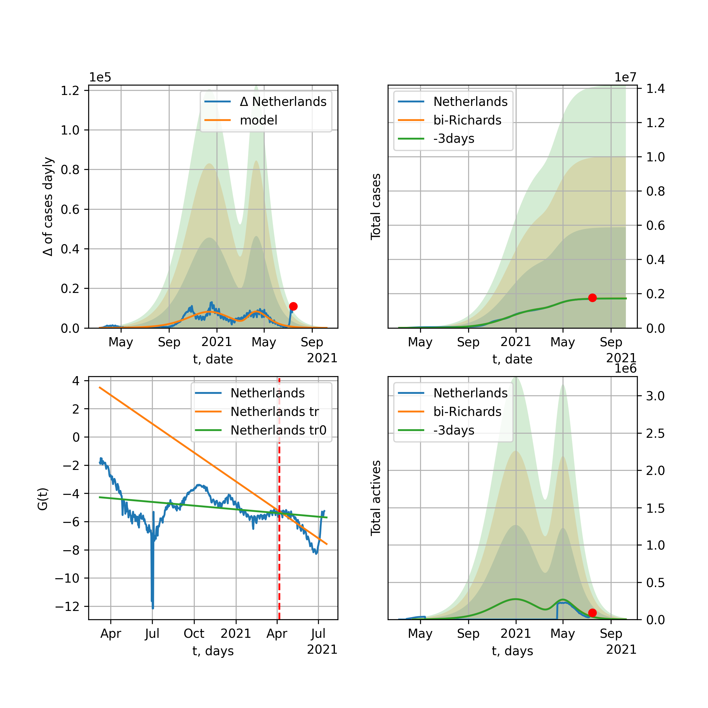
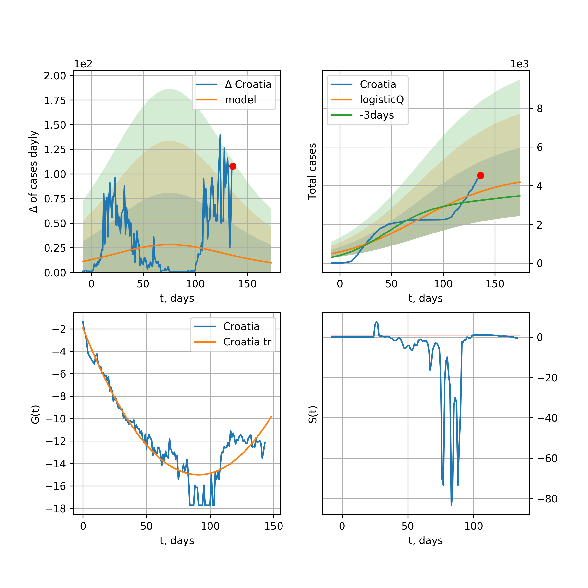

Multi-logistic model of COVID-19 dynamics
Model, code, results
Project maintained by algmaknick Hosted on GitHub Pages — Theme by mattgraham
World

World data at: 2020-05-11
+3 day model MAPE: 0.041012
model: bi-logisticQ
coeffs: [ 4.26203404e+06 1.04514552e-06 7.50022151e+01 -9.16112423e+04]
S.Korea scenario coeffs: [0.35416971, 0.02606324, 4.35859408, 19.30413219]
rational stdev: 0.187758
forecast at the end of period: +306 days
deltaDaycases: 1727
total cases: 5929242 ± 1113263
total death: 400296 ± 225476
tri-logisticQ approximation splitting points: 26,54
trend coefficient of determination: 0.957216
intercept_: -9.890425229004336
coeffs_: [ 0. -0.26614025 0.00124975]
trend1 coefficient of determination: 0.900515
intercept_: -20.622215746086294
coeffs_: [ 0. 0.23801537 -0.00236922]
trend coefficient of determination: 0.992535
intercept_: -2.83881257590539
coeffs_: [ 0. -0.29231533 0.0013094 ]
European Union

European Union data at: 2020-05-11
+3 day model MAPE: 0.014147
model: logisticQ
coeffs: [ 1.07270695e+06 7.92386441e-07 4.93102682e+01 -1.49450890e+05]
S.Korea scenario coeffs: [0.35416971, 0.02606324, 4.35859408, 19.30413219]
rational stdev: 0.428723
forecast at the end of period: +201 days
deltaDaycases: 327
total cases: 1447206 ± 620450
total death: 152278 ± 195855
trend coefficient of determination: 0.988029
intercept_: -3.001761998402836
coeffs_: [ 0. -0.32941988 0.00170381]
USA

USA data at: 2020-05-11
+3 day model MAPE: 0.012746
model: Richards
coeffs: [ 1.79139681e+06 3.42524919e+00 -4.35601791e+01 1.50679427e-02]
S.Korea scenario coeffs: [0.36242246, 2.56241634, 1.84890887, 0.13324732]
rational stdev: 0.279542
forecast at the end of period: +348 days
deltaDaycases: 911
total cases: 2387026 ± 667274
total death: 140887 ± 118151
trend coefficient of determination: 0.942905
intercept: -1.000958
slope: -0.047931
Spain

Spain data at: 2020-05-11
+3 day model MAPE: 0.011944
model: Richards
coeffs: [ 2.79067522e+05 6.19601038e+00 -3.96469261e+01 1.08202894e-02]
S.Korea scenario coeffs: [0.36242246, 2.56241634, 1.84890887, 0.13324732]
rational stdev: 0.205384
forecast at the end of period: +306 days
deltaDaycases: 57
total cases: 377674 ± 77568
total death: 37668 ± 23209
trend coefficient of determination: 0.939454
intercept: -0.804756
slope: -0.058876
Italy

Italy data at: 2020-05-11
+3 day model MAPE: 0.002612
model: Richards
coeffs: [ 2.33470148e+05 5.49493489e+00 -4.77517978e+01 1.11370778e-02]
S.Korea scenario coeffs: [0.36242246, 2.56241634, 1.84890887, 0.13324732]
rational stdev: 0.080604
forecast at the end of period: +278 days
deltaDaycases: 122
total cases: 312047 ± 25152
total death: 43636 ± 10551
trend coefficient of determination: 0.980832
intercept: -1.084612
slope: -0.057592
United Kingdom

United Kingdom data at: 2020-05-11
+3 day model MAPE: 0.015797
model: Richards
coeffs: [ 2.97178849e+05 3.55360710e+00 -5.16995225e+01 1.42113253e-02]
S.Korea scenario coeffs: [0.36242246, 2.56241634, 1.84890887, 0.13324732]
rational stdev: 0.106629
forecast at the end of period: +376 days
deltaDaycases: 104
total cases: 398698 ± 42513
total death: 57313 ± 18333
trend coefficient of determination: 0.921078
intercept: -1.412413
slope: -0.044201
France

France data at: 2020-05-11
+3 day model MAPE: 0.006349
model: Richards
coeffs: [1.77375586e+05 2.48456828e-01 2.40204793e+01 4.54480518e-01]
S.Korea scenario coeffs: [0.36242246, 2.56241634, 1.84890887, 0.13324732]
rational stdev: 0.191558
forecast at the end of period: +134 days
deltaDaycases: 92
total cases: 239269 ± 45833
total death: 35930 ± 20647
trend coefficient of determination: 0.954922
intercept: -3.373395
slope: -0.113410
Germany

Germany data at: 2020-05-11
+3 day model MAPE: 0.004558
model: Richards
coeffs: [ 1.74478993e+05 6.44253307e+00 -3.37592187e+01 1.33222328e-02]
S.Korea scenario coeffs: [0.36242246, 2.56241634, 1.84890887, 0.13324732]
rational stdev: 0.996429
forecast at the end of period: +208 days
deltaDaycases: 65
total cases: 235468 ± 234627
total death: 10452 ± 31244
trend coefficient of determination: 0.952607
intercept: -1.123076
slope: -0.071337
Turkey

Turkey data at: 2020-05-11
+3 day model MAPE: 0.008270
model: Richards
coeffs: [ 1.52421256e+05 9.66922163e-01 -4.48062975e+00 8.51404580e-02]
S.Korea scenario coeffs: [0.36242246, 2.56241634, 1.84890887, 0.13324732]
rational stdev: 0.278138
forecast at the end of period: +196 days
deltaDaycases: 91
total cases: 204343 ± 56835
total death: 5615 ± 4685
trend coefficient of determination: 0.776120
intercept: -1.317285
slope: -0.069997
Russia

Russia data at: 2020-05-11
+3 day model MAPE: 0.008760
model: Richards
coeffs: [ 1.04916861e+06 1.12751606e+00 -4.27487781e+01 3.07983057e-02]
S.Korea scenario coeffs: [0.36242246, 2.56241634, 1.84890887, 0.13324732]
rational stdev: 0.065421
forecast at the end of period: +656 days
deltaDaycases: 105
total cases: 1420492 ± 92929
total death: 12892 ± 2530
trend coefficient of determination: 0.886677
intercept: -1.731604
slope: -0.030250
Iran

Iran data at: 2020-05-11
+3 day model MAPE: 0.023391
model: Richards
coeffs: [1.14093303e+05 3.40249701e-01 4.81152307e+00 1.76955323e-01]
S.Korea scenario coeffs: [0.36242246, 2.56241634, 1.84890887, 0.13324732]
rational stdev: 0.308480
forecast at the end of period: +208 days
deltaDaycases: 113
total cases: 149530 ± 46126
total death: 9146 ± 8464
trend coefficient of determination: 0.910161
intercept: -2.087644
slope: -0.064100
Brazil

Brazil data at: 2020-05-11
+3 day model MAPE: 0.015756
model: logisticQ
coeffs: [ 4.55895161e+05 9.50711465e-06 6.78347314e+01 -9.13558692e+03]
S.Korea scenario coeffs: [0.35416971, 0.02606324, 4.35859408, 19.30413219]
rational stdev: 0.408103
forecast at the end of period: +341 days
deltaDaycases: 64
total cases: 615905 ± 251352
total death: 42319 ± 51811
trend coefficient of determination: 0.861632
intercept_: -4.019488163185299
coeffs_: [ 0. -0.29945759 0.00212988]
Canada

Canada data at: 2020-05-11
+3 day model MAPE: 0.002702
model: Richards
coeffs: [ 1.06791221e+05 2.60693449e+00 -6.29400447e+01 1.67923612e-02]
S.Korea scenario coeffs: [0.36242246, 2.56241634, 1.84890887, 0.13324732]
rational stdev: 0.187275
forecast at the end of period: +420 days
deltaDaycases: 37
total cases: 142885 ± 26758
total death: 10194 ± 5727
trend coefficient of determination: 0.939229
intercept: -1.533008
slope: -0.047792
Belgium

Belgium data at: 2020-05-11
+3 day model MAPE: 0.000797
model: Richards
coeffs: [ 5.77998678e+04 7.17492153e-01 -6.79035924e+00 1.02992782e-01]
S.Korea scenario coeffs: [0.36242246, 2.56241634, 1.84890887, 0.13324732]
rational stdev: 0.322452
forecast at the end of period: +208 days
deltaDaycases: 32
total cases: 77437 ± 24969
total death: 12614 ± 12202
trend coefficient of determination: 0.938274
intercept: -1.799270
slope: -0.066494
Peru

Peru data at: 2020-05-11
+3 day model MAPE: 0.000777
model: logisticQ
coeffs: [ 1.11537091e+05 6.10649803e-06 5.23005497e+01 -1.79124545e+04]
S.Korea scenario coeffs: [0.35416971, 0.02606324, 4.35859408, 19.30413219]
rational stdev: 0.360018
forecast at the end of period: +250 days
deltaDaycases: 28
total cases: 150538 ± 54196
total death: 4289 ± 4632
trend coefficient of determination: 0.968910
intercept_: -3.6736416686222864
coeffs_: [ 0. -0.28419532 0.00191005]
Netherlands

Netherlands data at: 2020-05-11
+3 day model MAPE: 0.002836
model: Richards
coeffs: [4.63370003e+04 4.92460703e-01 4.01525544e+00 1.47586204e-01]
S.Korea scenario coeffs: [0.36242246, 2.56241634, 1.84890887, 0.13324732]
rational stdev: 0.209241
forecast at the end of period: +208 days
deltaDaycases: 26
total cases: 62025 ± 12978
total death: 7908 ± 4964
trend coefficient of determination: 0.971644
intercept: -1.350219
slope: -0.076403
India

India data at: 2020-05-11
+3 day model MAPE: 0.031274
model: Richards
coeffs: [ 1.00796173e+06 9.21406072e-01 -7.21735767e+01 2.22643302e-02]
S.Korea scenario coeffs: [0.36242246, 2.56241634, 1.84890887, 0.13324732]
rational stdev: 0.327048
forecast at the end of period: +936 days
deltaDaycases: 273
total cases: 1331908 ± 435597
total death: 43138 ± 42324
trend coefficient of determination: 0.400048
intercept: -1.707477
slope: -0.020918
Switzerland

Switzerland data at: 2020-05-11
+3 day model MAPE: 0.005105
model: logisticQ
coeffs: [ 2.95473180e+04 9.74110212e-07 2.56000146e+01 -1.53788117e+05]
S.Korea scenario coeffs: [0.35416971, 0.02606324, 4.35859408, 19.30413219]
rational stdev: 0.353820
forecast at the end of period: +96 days
deltaDaycases: 15
total cases: 39814 ± 14087
total death: 2420 ± 2568
trend coefficient of determination: 0.985530
intercept_: -3.602003310233698
coeffs_: [ 0. -0.33807769 0.002248 ]
Ecuador

Ecuador data at: 2020-05-11
+3 day model MAPE: 0.079242
model: logisticQ
coeffs: [ 3.84303372e+04 6.92175158e-07 4.06936377e+01 -1.12707870e+05]
S.Korea scenario coeffs: [0.35416971, 0.02606324, 4.35859408, 19.30413219]
rational stdev: 0.365935
forecast at the end of period: +194 days
deltaDaycases: 30
total cases: 51240 ± 18750
total death: 3724 ± 4088
trend coefficient of determination: 0.698755
intercept_: -5.385674783068357
coeffs_: [ 0. -0.32227041 0.00292797]
Portugal

Portugal data at: 2020-05-11
+3 day model MAPE: 0.010121
model: Richards
coeffs: [ 2.92931242e+04 6.70699434e+00 -3.71992990e+01 1.06952922e-02]
S.Korea scenario coeffs: [0.36242246, 2.56241634, 1.84890887, 0.13324732]
rational stdev: 0.509838
forecast at the end of period: +236 days
deltaDaycases: 21
total cases: 39014 ± 19891
total death: 1612 ± 2465
trend coefficient of determination: 0.889335
intercept: -0.740991
slope: -0.064068
Saudi Arabia

Saudi Arabia data at: 2020-05-11
+3 day model MAPE: 0.037898
model: logisticQ
coeffs: [ 6.03140857e+04 8.89122137e-06 5.46300375e+01 -1.21516833e+04]
S.Korea scenario coeffs: [0.35416971, 0.02606324, 4.35859408, 19.30413219]
rational stdev: 0.341488
forecast at the end of period: +208 days
deltaDaycases: 156
total cases: 78322 ± 26746
total death: 486 ± 497
trend coefficient of determination: 0.825818
intercept_: -4.32407862395812
coeffs_: [ 0. -0.23193139 0.00146337]
Sweden

Sweden data at: 2020-05-11
+3 day model MAPE: 0.008176
model: Richards
coeffs: [ 4.26579644e+04 1.11257118e+00 -3.89114391e+01 3.45485061e-02]
S.Korea scenario coeffs: [0.36242246, 2.56241634, 1.84890887, 0.13324732]
rational stdev: 0.276459
forecast at the end of period: +446 days
deltaDaycases: 18
total cases: 56656 ± 15663
total death: 6916 ± 5735
trend coefficient of determination: 0.817296
intercept: -1.401115
slope: -0.041059
Pakistan

Pakistan data at: 2020-05-11
+3 day model MAPE: 0.010298
model: Richards
coeffs: [ 4.73826893e+05 4.89052373e-01 -5.79454179e+01 3.68149466e-02]
S.Korea scenario coeffs: [0.36242246, 2.56241634, 1.84890887, 0.13324732]
rational stdev: 0.413337
forecast at the end of period: +1216 days
deltaDaycases: 42
total cases: 638593 ± 263954
total death: 14053 ± 17425
trend coefficient of determination: 0.166507
intercept: -2.193701
slope: -0.016865
Ireland

Ireland data at: 2020-05-11
+3 day model MAPE: 0.006202
model: logisticQ
coeffs: [ 2.35082381e+04 6.82543925e-06 3.46998554e+01 -1.93827450e+04]
S.Korea scenario coeffs: [0.35416971, 0.02606324, 4.35859408, 19.30413219]
rational stdev: 0.330894
forecast at the end of period: +138 days
deltaDaycases: 21
total cases: 31501 ± 10423
total death: 1997 ± 1982
trend coefficient of determination: 0.981721
intercept_: -3.6720134445479804
coeffs_: [ 0. -0.2878725 0.00184665]
Mexico

Mexico data at: 2020-05-11
+3 day model MAPE: 0.000928
model: Richards
coeffs: [ 2.65109170e+05 3.69938391e-01 -1.91212898e+01 7.57052034e-02]
S.Korea scenario coeffs: [0.36242246, 2.56241634, 1.84890887, 0.13324732]
rational stdev: 0.125574
forecast at the end of period: +796 days
deltaDaycases: 20
total cases: 359050 ± 45087
total death: 35315 ± 13303
trend coefficient of determination: 0.860601
intercept: -2.118736
slope: -0.033707
Singapore

Singapore data at: 2020-05-11
+3 day model MAPE: 0.074240
model: bi-logisticQ
coeffs: [ 2.49294238e+04 6.24493389e-06 8.54889295e+01 -2.38062466e+04]
S.Korea scenario coeffs: [0.35, 0.5, 4.0, 1.0]
rational stdev: 0.334303
forecast at the end of period: +96 days
deltaDaycases: 0
total cases: 25028 ± 8367
total death: 22 ± 22
bi-logisticQ approximation splitting point: 35
trend coefficient of determination: 0.914568
intercept_: -2.036640634366525
coeffs_: [ 0. -0.39517788 0.00592335]
trend coefficient of determination: 0.916606
intercept_: -9.288245585283516
coeffs_: [ 0. 0.07034352 -0.00106705]
Chile

Chile data at: 2020-05-11
+3 day model MAPE: 0.054630
model: Richards
coeffs: [ 7.38811887e+05 6.22000049e-01 -1.22531665e+02 2.25947041e-02]
S.Korea scenario coeffs: [0.36242246, 2.56241634, 1.84890887, 0.13324732]
rational stdev: 0.417891
forecast at the end of period: +1706 days
deltaDaycases: 29
total cases: 1000414 ± 418063
total death: 10748 ± 13474
trend coefficient of determination: 0.008259
intercept: -2.726468
slope: -0.007094
Israel

Israel data at: 2020-05-11
+3 day model MAPE: 0.002737
model: Richards
coeffs: [ 1.72165723e+04 7.03853667e+00 -3.89724546e+01 1.23162052e-02]
S.Korea scenario coeffs: [0.36242246, 2.56241634, 1.84890887, 0.13324732]
rational stdev: 0.138882
forecast at the end of period: +208 days
deltaDaycases: 6
total cases: 23248 ± 3228
total death: 363 ± 151
trend coefficient of determination: 0.890392
intercept: -1.097215
slope: -0.087937
Austria

Austria data at: 2020-05-11
+3 day model MAPE: 0.005843
model: logisticQ
coeffs: [ 1.52471524e+04 1.07565104e-06 2.33962023e+01 -1.83128443e+05]
S.Korea scenario coeffs: [0.35416971, 0.02606324, 4.35859408, 19.30413219]
rational stdev: 0.321462
forecast at the end of period: +82 days
deltaDaycases: 5
total cases: 20596 ± 6621
total death: 804 ± 775
trend coefficient of determination: 0.980627
intercept_: -2.808779956457517
coeffs_: [ 0. -0.35130558 0.00235909]
Belarus

Belarus data at: 2020-05-11
+3 day model MAPE: 0.001379
model: Richards
coeffs: [ 5.19445397e+04 1.49680477e+00 -4.21556607e+01 3.25626773e-02]
S.Korea scenario coeffs: [0.36242246, 2.56241634, 1.84890887, 0.13324732]
rational stdev: 0.132591
forecast at the end of period: +376 days
deltaDaycases: 20
total cases: 69502 ± 9215
total death: 392 ± 155
trend coefficient of determination: 0.799210
intercept: -1.716990
slope: -0.047252
Japan

Japan data at: 2020-05-11
+3 day model MAPE: 0.011851
model: Richards
coeffs: [1.58466596e+04 1.02079949e-01 7.90719208e+01 1.54892893e+00]
S.Korea scenario coeffs: [0.36242246, 2.56241634, 1.84890887, 0.13324732]
rational stdev: 0.630123
forecast at the end of period: +166 days
deltaDaycases: 2
total cases: 21551 ± 13579
total death: 860 ± 1625
trend coefficient of determination: 0.795066
intercept: -7.035030
slope: -0.120414
Qatar

Qatar data at: 2020-05-11
+3 day model MAPE: 0.080346
model: bi-logisticQ
coeffs: [ 2.16148538e+04 3.72104031e-06 5.23034574e+01 -3.44528098e+04]
S.Korea scenario coeffs: [0.35416971, 0.02606324, 4.35859408, 19.30413219]
rational stdev: 0.329918
forecast at the end of period: +222 days
deltaDaycases: 15
total cases: 40743 ± 13441
total death: 24 ± 23
bi-logisticQ approximation splitting point: 31
trend coefficient of determination: 0.919409
intercept_: -1.6852707465713292
coeffs_: [ 0. -0.86529683 0.02183056]
trend coefficient of determination: 0.956597
intercept_: -6.7712421571111285
coeffs_: [ 0. -0.10526463 0.00011521]
Poland

Poland data at: 2020-05-11
+3 day model MAPE: 0.015166
model: Richards
coeffs: [ 2.10135147e+04 3.65084903e+00 -5.07410657e+01 1.37755476e-02]
S.Korea scenario coeffs: [0.36242246, 2.56241634, 1.84890887, 0.13324732]
rational stdev: 0.228984
forecast at the end of period: +348 days
deltaDaycases: 11
total cases: 27914 ± 6391
total death: 1386 ± 952
trend coefficient of determination: 0.764603
intercept: -1.216553
slope: -0.045562
UAE

UAE data at: 2020-05-11
+3 day model MAPE: 0.020998
model: Richards
coeffs: [ 3.57333829e+04 2.81434490e+00 -7.18327736e+01 1.49292779e-02]
S.Korea scenario coeffs: [0.36242246, 2.56241634, 1.84890887, 0.13324732]
rational stdev: 0.095602
forecast at the end of period: +460 days
deltaDaycases: 10
total cases: 47941 ± 4583
total death: 510 ± 146
trend coefficient of determination: 0.820006
intercept: -1.889312
slope: -0.039966
Romania

Romania data at: 2020-05-11
+3 day model MAPE: 0.015460
model: Richards
coeffs: [ 2.03688125e+04 4.42658382e+00 -5.58246363e+01 1.12883267e-02]
S.Korea scenario coeffs: [0.36242246, 2.56241634, 1.84890887, 0.13324732]
rational stdev: 0.134958
forecast at the end of period: +348 days
deltaDaycases: 12
total cases: 26980 ± 3641
total death: 1699 ± 687
trend coefficient of determination: 0.863843
intercept: -1.259263
slope: -0.045519
Ukraine

Ukraine data at: 2020-05-10
+3 day model MAPE: 0.010476
model: Richards
coeffs: [2.40642544e+04 2.21196987e-01 1.88349679e+01 3.03800719e-01]
S.Korea scenario coeffs: [0.36242246, 2.56241634, 1.84890887, 0.13324732]
rational stdev: 0.273115
forecast at the end of period: +237 days
deltaDaycases: 14
total cases: 32120 ± 8772
total death: 824 ± 675
trend coefficient of determination: 0.787094
intercept: -2.539696
slope: -0.076311
Indonesia

Indonesia data at: 2020-05-11
+3 day model MAPE: 0.015251
model: Richards
coeffs: [ 2.63751148e+04 1.56850805e+00 -6.14168780e+01 2.41858485e-02]
S.Korea scenario coeffs: [0.36242246, 2.56241634, 1.84890887, 0.13324732]
rational stdev: 0.110289
forecast at the end of period: +404 days
deltaDaycases: 20
total cases: 34188 ± 3770
total death: 2375 ± 785
trend coefficient of determination: 0.859153
intercept: -1.831864
slope: -0.039253
Bangladesh

Bangladesh data at: 2020-05-11
+3 day model MAPE: 0.121997
model: bi-logisticQ
coeffs: [ 1.52576917e+04 4.82282721e-06 4.47207282e+01 -3.35831063e+04]
S.Korea scenario coeffs: [0.35416971, 0.02606324, 4.35859408, 19.30413219]
rational stdev: 0.301595
forecast at the end of period: +40 days
deltaDaycases: 1
total cases: 15303 ± 4615
total death: 233 ± 210
bi-logisticQ approximation splitting point: 25
trend coefficient of determination: 0.232653
intercept_: -6.325425729788838
coeffs_: [ 0. 0.22449345 -0.0150245 ]
trend coefficient of determination: 0.980575
intercept_: 3.92534182185733
coeffs_: [ 0. -0.4635868 0.00319602]
South_Korea

South Korea data at: 2020-05-11
+3 day model MAPE: 0.001961
model: bi-logisticQ
coeffs: [2.89231183e+03 1.49069448e+00 6.45729581e+00 7.82376547e-02]
rational stdev: 0.120222
forecast at the end of period: +12 days
deltaDaycases: 0
total cases: 10823 ± 1301
total death: 255 ± 91
bi-logisticQ approximation splitting point: 25
trend coefficient of determination: 0.936460
intercept: -5.478818
slope: -0.338423
trend coefficient of determination: 0.672092
intercept: -11.543514
slope: -0.064784
Denmark

Denmark data at: 2020-05-11
+3 day model MAPE: 0.013748
model: Richards
coeffs: [1.15649627e+04 2.69621225e-01 8.89130914e+00 2.34922216e-01]
S.Korea scenario coeffs: [0.36242246, 2.56241634, 1.84890887, 0.13324732]
rational stdev: 0.376675
forecast at the end of period: +208 days
deltaDaycases: 9
total cases: 15276 ± 5754
total death: 774 ± 874
trend coefficient of determination: 0.864088
intercept: -2.178465
slope: -0.069277
Serbia

Serbia data at: 2020-05-11
+3 day model MAPE: 0.007957
model: logisticQ
coeffs: [ 1.03379684e+04 2.39663226e-06 2.91244510e+01 -5.80825392e+04]
S.Korea scenario coeffs: [0.35416971, 0.02606324, 4.35859408, 19.30413219]
rational stdev: 0.279999
forecast at the end of period: +138 days
deltaDaycases: 2
total cases: 13961 ± 3909
total death: 299 ± 251
trend coefficient of determination: 0.971856
intercept_: -4.044602037439751
coeffs_: [ 0. -0.2636159 0.00164328]
Philippines

Philippines data at: 2020-05-11
+3 day model MAPE: 0.029788
model: Richards
coeffs: [ 1.38364590e+04 5.61473035e+00 -6.91175518e+01 8.83182894e-03]
S.Korea scenario coeffs: [0.36242246, 2.56241634, 1.84890887, 0.13324732]
rational stdev: 0.298181
forecast at the end of period: +432 days
deltaDaycases: 2
total cases: 18719 ± 5581
total death: 1225 ± 1095
trend coefficient of determination: 0.647798
intercept: -1.497833
slope: -0.047342
Norway

Norway data at: 2020-05-11
+3 day model MAPE: 0.004489
model: Richards
coeffs: [ 8.21985911e+03 1.12881541e+00 -1.32332000e+01 7.07313354e-02]
S.Korea scenario coeffs: [0.36242246, 2.56241634, 1.84890887, 0.13324732]
rational stdev: 0.207150
forecast at the end of period: +208 days
deltaDaycases: 2
total cases: 11110 ± 2301
total death: 306 ± 190
trend coefficient of determination: 0.929712
intercept: -1.108306
slope: -0.076740
Czechia

Czechia data at: 2020-05-11
+3 day model MAPE: 0.011411
model: logisticQ
coeffs: [ 7.82968342e+03 8.72656025e-07 2.50258594e+01 -1.59415689e+05]
S.Korea scenario coeffs: [0.35416971, 0.02606324, 4.35859408, 19.30413219]
rational stdev: 0.341363
forecast at the end of period: +96 days
deltaDaycases: 5
total cases: 10520 ± 3591
total death: 362 ± 370
trend coefficient of determination: 0.917433
intercept_: -3.938225353589025
coeffs_: [ 0. -0.28611339 0.00197313]
Colombia

Colombia data at: 2020-05-11
+3 day model MAPE: 0.044270
model: Richards
coeffs: [ 1.50460589e+05 7.38244250e-01 -1.12015418e+02 2.28313059e-02]
S.Korea scenario coeffs: [0.36242246, 2.56241634, 1.84890887, 0.13324732]
rational stdev: 0.328911
forecast at the end of period: +1356 days
deltaDaycases: 9
total cases: 203386 ± 66896
total death: 8389 ± 8277
trend coefficient of determination: 0.665602
intercept: -1.475996
slope: -0.037778
Australia

Australia data at: 2020-05-11
+3 day model MAPE: 0.003745
model: logisticQ
coeffs: [ 6.71917681e+03 2.13246252e-06 1.82527025e+01 -1.04901322e+05]
S.Korea scenario coeffs: [0.35416971, 0.02606324, 4.35859408, 19.30413219]
rational stdev: 0.145103
forecast at the end of period: +82 days
deltaDaycases: 0
total cases: 9097 ± 1320
total death: 126 ± 54
trend coefficient of determination: 0.970350
intercept_: -4.530831327936648
coeffs_: [ 0. -0.29443521 0.00199641]
Malaysia

Malaysia data at: 2020-05-11
+3 day model MAPE: 0.016509
model: logisticQ
coeffs: [ 6.37982359e+03 9.73178247e-07 2.86122270e+01 -1.25107009e+05]
S.Korea scenario coeffs: [0.35416971, 0.02606324, 4.35859408, 19.30413219]
rational stdev: 0.333125
forecast at the end of period: +131 days
deltaDaycases: 1
total cases: 8612 ± 2869
total death: 139 ± 138
trend coefficient of determination: 0.856606
intercept_: -4.359697093932548
coeffs_: [ 0. -0.25569075 0.00177528]
Egypt

Egypt data at: 2020-05-11
+3 day model MAPE: 0.058706
model: logisticQ
coeffs: [ 2.04029994e+04 2.61010633e-05 4.76428935e+01 -2.83197491e+03]
S.Korea scenario coeffs: [0.35416971, 0.02606324, 4.35859408, 19.30413219]
rational stdev: 0.172647
forecast at the end of period: +194 days
deltaDaycases: 48
total cases: 25966 ± 4483
total death: 1420 ± 735
trend coefficient of determination: 0.946349
intercept_: -7.5387180301783
coeffs_: [ 0. -0.1353419 0.00088636]
Finland

Finland data at: 2020-05-11
+3 day model MAPE: 0.008717
model: Richards
coeffs: [ 7.70310709e+03 3.39546492e+00 -6.52003308e+01 1.35094306e-02]
S.Korea scenario coeffs: [0.36242246, 2.56241634, 1.84890887, 0.13324732]
rational stdev: 0.176707
forecast at the end of period: +320 days
deltaDaycases: 7
total cases: 9930 ± 1754
total death: 449 ± 238
trend coefficient of determination: 0.821050
intercept: -1.515999
slope: -0.048503
Morocco

Morocco data at: 2020-05-11
+3 day model MAPE: 0.048466
model: logisticQ
coeffs: [ 6.78902099e+03 2.15630959e-06 3.06090200e+01 -4.87899467e+04]
S.Korea scenario coeffs: [0.35416971, 0.02606324, 4.35859408, 19.30413219]
rational stdev: 0.267489
forecast at the end of period: +124 days
deltaDaycases: 12
total cases: 8930 ± 2388
total death: 267 ± 214
trend coefficient of determination: 0.971124
intercept_: -4.903797119241697
coeffs_: [ 0. -0.25657652 0.00225721]
Argentina

Argentina data at: 2020-05-11
+3 day model MAPE: 0.043183
model: Richards
coeffs: [ 1.12257970e+04 2.69370166e+00 -9.02320279e+01 1.23690307e-02]
S.Korea scenario coeffs: [0.36242246, 2.56241634, 1.84890887, 0.13324732]
rational stdev: 0.285398
forecast at the end of period: +586 days
deltaDaycases: 2
total cases: 15049 ± 4295
total death: 752 ± 643
trend coefficient of determination: 0.036458
intercept: -2.614594
slope: -0.019541
Algeria

Algeria data at: 2020-05-11
+3 day model MAPE: 0.048896
model: logisticQ
coeffs: [ 8.02294138e+03 1.64051176e-06 3.61960351e+01 -4.58551866e+04]
S.Korea scenario coeffs: [0.35416971, 0.02606324, 4.35859408, 19.30413219]
rational stdev: 0.277865
forecast at the end of period: +152 days
deltaDaycases: 15
total cases: 10386 ± 2886
total death: 893 ± 744
trend coefficient of determination: 0.940064
intercept_: -6.304110916936525
coeffs_: [ 0. -0.21031734 0.00197281]
Luxembourg

Luxembourg data at: 2020-05-11
+3 day model MAPE: 0.003521
model: Richards
coeffs: [ 3.84177264e+03 1.83248292e+01 -3.33837059e+01 6.23186913e-03]
S.Korea scenario coeffs: [0.36242246, 2.56241634, 1.84890887, 0.13324732]
rational stdev: 0.451211
forecast at the end of period: +152 days
deltaDaycases: 1
total cases: 5191 ± 2342
total death: 134 ± 181
trend coefficient of determination: 0.586113
intercept: -1.530260
slope: -0.077895
Thailand

Thailand data at: 2020-05-11
+3 day model MAPE: 0.002737
model: Richards
coeffs: [ 2.98550074e+03 1.49814306e+01 -3.70644001e+01 8.30562813e-03]
S.Korea scenario coeffs: [0.36242246, 2.56241634, 1.84890887, 0.13324732]
rational stdev: 0.094197
forecast at the end of period: +124 days
deltaDaycases: 1
total cases: 4029 ± 379
total death: 74 ± 20
trend coefficient of determination: 0.873236
intercept: -1.294103
slope: -0.114744
Hungary

Hungary data at: 2020-05-11
+3 day model MAPE: 0.003468
model: logisticQ
coeffs: [ 3.52060072e+03 2.87774261e-06 3.40221961e+01 -3.88965338e+04]
S.Korea scenario coeffs: [0.35416971, 0.02606324, 4.35859408, 19.30413219]
rational stdev: 0.294865
forecast at the end of period: +152 days
deltaDaycases: 2
total cases: 4730 ± 1394
total death: 606 ± 536
trend coefficient of determination: 0.977749
intercept_: -3.4291577273510345
coeffs_: [ 0. -0.2370671 0.0014823]
Greece

Greece data at: 2020-05-11
+3 day model MAPE: 0.008302
model: logisticQ
coeffs: [ 2.64579462e+03 9.93178809e-07 2.36292930e+01 -1.23538548e+05]
S.Korea scenario coeffs: [0.35416971, 0.02606324, 4.35859408, 19.30413219]
rational stdev: 0.274769
forecast at the end of period: +96 days
deltaDaycases: 1
total cases: 3555 ± 977
total death: 196 ± 161
trend coefficient of determination: 0.941442
intercept_: -3.348950113063511
coeffs_: [ 0. -0.29953163 0.0022636 ]
Iraq

Iraq data at: 2020-05-11
+3 day model MAPE: 0.043938
model: bi-logisticQ
coeffs: [ 1.46541137e+03 7.18928571e-06 4.21939023e+01 -3.00869780e+04]
rational stdev: 0.074602
forecast at the end of period: +124 days
deltaDaycases: 0
total cases: 2960 ± 220
total death: 115 ± 25
bi-logisticQ approximation splitting point: 42
trend coefficient of determination: 0.938502
intercept_: -6.116864757771229
coeffs_: [ 0. -0.176838 0.00090835]
trend coefficient of determination: 0.450561
intercept_: -12.202306130928111
coeffs_: [ 0. 0.08490011 -0.00132436]
Croatia

Croatia data at: 2020-05-11
+3 day model MAPE: 0.008997
model: logisticQ
coeffs: [ 2.12217514e+03 1.05394323e-06 2.66826814e+01 -1.35956111e+05]
S.Korea scenario coeffs: [0.35416971, 0.02606324, 4.35859408, 19.30413219]
rational stdev: 0.328760
forecast at the end of period: +110 days
deltaDaycases: 0
total cases: 2862 ± 940
total death: 118 ± 116
trend coefficient of determination: 0.978865
intercept_: -2.194560058585756
coeffs_: [ 0. -0.28369049 0.00178539]
Iceland

Iceland data at: 2020-05-09
+3 day model MAPE: 0.000029
model: logisticQ
coeffs: [ 1.80196106e+03 9.52672363e-06 1.33193786e+01 -1.85987822e+04]
rational stdev: 0.065620
forecast at the end of period: +42 days
deltaDaycases: 0
total cases: 1801 ± 118
total death: 10 ± 1
trend coefficient of determination: 0.940651
intercept_: -5.797807936004534
coeffs_: [ 0. -0.16825284 -0.0002015 ]
Estonia

Estonia data at: 2020-05-11
+3 day model MAPE: 0.000395
model: Richards
coeffs: [1.76539594e+03 2.17760798e-01 2.90466894e+00 4.52564841e-01]
S.Korea scenario coeffs: [0.36242246, 2.56241634, 1.84890887, 0.13324732]
rational stdev: 0.130998
forecast at the end of period: +131 days
deltaDaycases: 0
total cases: 2378 ± 311
total death: 83 ± 32
trend coefficient of determination: 0.858480
intercept: -4.027607
slope: -0.099407
Bulgaria

Bulgaria data at: 2020-05-11
+3 day model MAPE: 0.008369
model: logisticQ
coeffs: [ 2.74856815e+03 3.46342561e-06 3.54279699e+01 -2.06791220e+04]
S.Korea scenario coeffs: [0.35416971, 0.02606324, 4.35859408, 19.30413219]
rational stdev: 0.172215
forecast at the end of period: +201 days
deltaDaycases: 1
total cases: 3691 ± 635
total death: 172 ± 88
trend coefficient of determination: 0.890845
intercept_: -6.055107585588556
coeffs_: [ 0. -0.17900419 0.0015184 ]
New Zealand

New Zealand data at: 2020-05-11
+3 day model MAPE: 0.002363
model: logisticQ
coeffs: [ 1.47043056e+03 3.46457896e-06 2.49048853e+01 -7.13818598e+04]
S.Korea scenario coeffs: [0.35416971, 0.02606324, 4.35859408, 19.30413219]
rational stdev: 0.346989
forecast at the end of period: +96 days
deltaDaycases: 0
total cases: 1990 ± 690
total death: 27 ± 28
trend coefficient of determination: 0.863913
intercept_: -3.849678200954486
coeffs_: [ 0. -0.1511453 -0.00024684]
Slovenia

Slovenia data at: 2020-05-11
+3 day model MAPE: 0.004477
model: bi-logisticQ
coeffs: [ 1.20772893e+03 8.68031657e-07 1.92172717e+01 -1.76719536e+05]
S.Korea scenario coeffs: [0.35416971, 0.02606324, 4.35859408, 19.30413219]
rational stdev: 0.222655
forecast at the end of period: +82 days
deltaDaycases: 0
total cases: 1848 ± 411
total death: 129 ± 86
bi-logisticQ approximation splitting point: 10
trend coefficient of determination: 0.968209
intercept_: -2.53431844604435
coeffs_: [ 0. -0.45029183 -0.00732028]
trend coefficient of determination: 0.907299
intercept_: -6.546980759066954
coeffs_: [ 0. -0.13141754 0.00024341]
Slovakia

Slovakia data at: 2020-05-09
+3 day model MAPE: 0.003693
model: logisticQ
coeffs: [ 1.48665625e+03 5.64983925e-04 2.38052172e+01 -2.14960101e+02]
S.Korea scenario coeffs: [0.35416971, 0.02606324, 4.35859408, 19.30413219]
rational stdev: 0.274293
forecast at the end of period: +126 days
deltaDaycases: 0
total cases: 2008 ± 550
total death: 35 ± 28
trend coefficient of determination: 0.911586
intercept_: -3.3105954374051088
coeffs_: [ 0. -0.27864029 0.00196368]
Lithuania

Lithuania data at: 2020-05-10
+3 day model MAPE: 0.004388
model: Richards
coeffs: [ 1.51617292e+03 1.13960832e+01 -4.46482941e+01 7.26342440e-03]
S.Korea scenario coeffs: [0.36242246, 2.56241634, 1.84890887, 0.13324732]
rational stdev: 0.257421
forecast at the end of period: +209 days
deltaDaycases: 0
total cases: 2034 ± 523
total death: 68 ± 52
trend coefficient of determination: 0.895792
intercept: -0.662174
slope: -0.085614
Latvia

Latvia data at: 2020-05-10
+3 day model MAPE: 0.019442
model: logisticQ
coeffs: [ 8.91578025e+02 5.43594346e-07 1.94144120e+01 -2.18064385e+05]
S.Korea scenario coeffs: [0.35416971, 0.02606324, 4.35859408, 19.30413219]
rational stdev: 0.302795
forecast at the end of period: +83 days
deltaDaycases: 0
total cases: 1195 ± 361
total death: 22 ± 19
trend coefficient of determination: 0.761153
intercept_: -3.6279286653232443
coeffs_: [ 0. -0.27588769 0.00240079]
Cyprus

Cyprus data at: 2020-05-11
+3 day model MAPE: 0.005851
model: logisticQ
coeffs: [ 8.77270932e+02 1.87385325e-06 1.62550344e+01 -7.93372665e+04]
S.Korea scenario coeffs: [0.35416971, 0.02606324, 4.35859408, 19.30413219]
rational stdev: 0.178838
forecast at the end of period: +82 days
deltaDaycases: 0
total cases: 1185 ± 211
total death: 21 ± 11
trend coefficient of determination: 0.851745
intercept_: -4.426356379713935
coeffs_: [ 0. -0.23291309 0.00164509]
Malta

Malta data at: 2020-05-11
+3 day model MAPE: 0.000848
model: Richards
coeffs: [4.87946991e+02 1.26096241e-01 1.98305451e+01 1.06348088e+00]
S.Korea scenario coeffs: [0.36242246, 2.56241634, 1.84890887, 0.13324732]
rational stdev: 0.225524
forecast at the end of period: +68 days
deltaDaycases: 0
total cases: 643 ± 145
total death: 6 ± 4
trend coefficient of determination: 0.834522
intercept: -4.782912
slope: -0.138303
Sri Lanka

Sri Lanka data at: 2020-05-11
+3 day model MAPE: 0.062838
model: bi-logisticQ
coeffs: [ 5.18033887e+02 4.95277952e-03 3.80543331e+01 -3.87676409e+01]
S.Korea scenario coeffs: [0.35416971, 0.02606324, 4.35859408, 19.30413219]
rational stdev: 0.261390
forecast at the end of period: +208 days
deltaDaycases: 0
total cases: 917 ± 239
total death: 9 ± 7
bi-logisticQ approximation splitting point: 35
trend coefficient of determination: 0.700900
intercept_: -1.7291427146735243
coeffs_: [ 0. -0.62059696 0.01251448]
trend coefficient of determination: 0.356970
intercept_: -45.35102800084556
coeffs_: [ 0. 1.68688112 -0.01943157]
References
- Worldometers COVID-19 Coronavirus Pandemic
- Su COVID-19 susijusi gyventojų ir verslo statistika
- Bi-logistic growth
- Least squares
- scikit-learn
- scipy.org
- European Centre for Disease Prevention and Control An agency of the European Union
- Aaron Miller, Mac Josh Reandelar, Kimberly Fasciglione, Violeta Roumenova, Yan Li, Gonzalo H Otazu, Correlation between universal BCG vaccination policy and reduced morbidity and mortality for COVID-19: an epidemiological study, https://doi.org/10.1101/2020.03.24.20042937